Java's Cool Guide Utilisateur : Installation - Désinstallation
Vérification avant installation
Vous devez avoir d'installer sur la machine le Java JDK 1.6. Pour vérifier si il est déjà présent, ouvrez une console (sous windows cliquez sur Démarrer -> Executer et tapez cmd).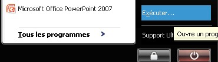
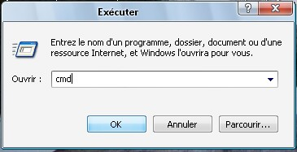
Une fenêtre apparaît dans laquel vous allez marquer "javac -version". Si vous avez le même résultat que sur la photo-ci dessous, passez directement à la phase d'installation.
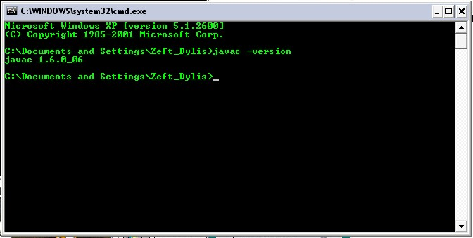
Si ce n'est pas le cas, pas d'affolement rendez vous sur le site de sun et recherchez le jdk 1.6. Installez-le, une fois cette étape réalisé, cherchez sur l'ordinateur l'adresse du dossier où est installê le jdk. Une fois trouvée, rendre vous dans le dossier bin puis notez le chemin qui correspond au path qui sera utilis&eaacute; dans la prochaine étape.
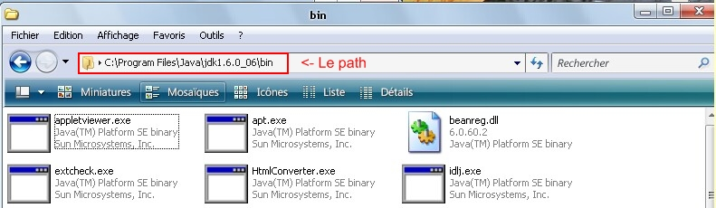
Maintenant vous devez modifier les variables d'environnenements. Pour windows xp faîtes un clique-droit sur le "Poste de Travail" ("Ordinateur" sous vista ) puis "Propriété".
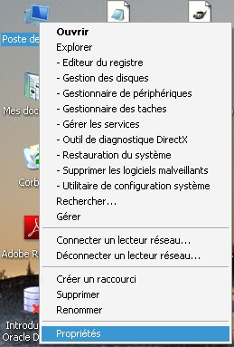
Allez dans l'onglet "Avancé" en haut de la fenêtre, et cliquez sur "Variables d'environnements".
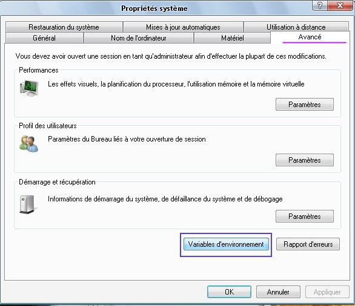
Une nouvelle fenêtre apparaît. Dirigez vous vers le second cadre appelé "Variable système".
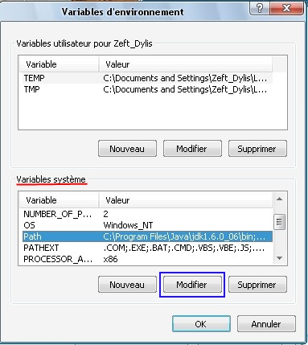
Trouvez la variable "Path" et faites "Modifier". Dans le cadre "Valeur de variable", au début de la ligne, ajoutez le path que vous avez noté.
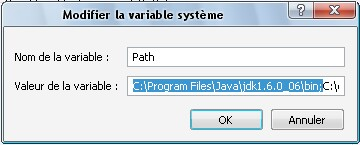
Recommencez le test avec la ligne de commande après un redémarrage.
Installation
Double cliquez sur "javascool-windows-installer.jar".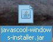
Choisissez la langue puis Ok.
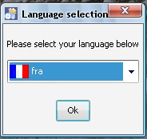
Lisez les différentes infomations, faites suivant deux fois.
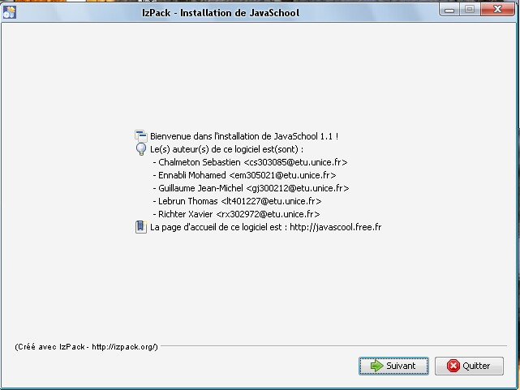
La licence apparait, lisez là puis cliquez sur "j'accepte les termes du contrat" puis suivant.
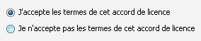
Laissez le répertoire d'installation par défaut puis suivant et ok.
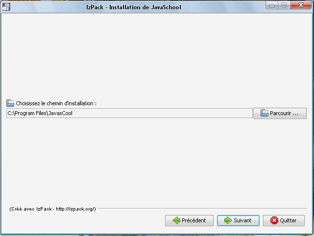
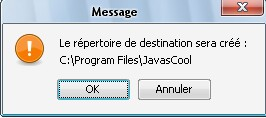
L'espace requis vous sera présenté, cliquez sur suivant si vous en avez assez sinon faites de l'espace libre sur le disque. Dés lors l'installation se mettra en route. Vous pouvez vérifier son déroulement grâce aux barres d'avancements. Une fois terminé, faîtes suivant.
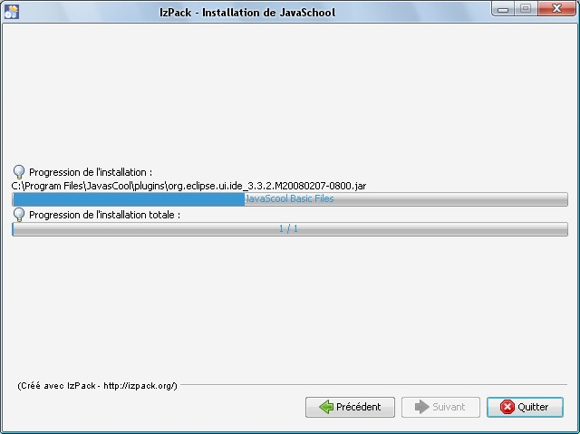
Il vous sera proposé de mettre un raccourci sur le bureau, ne touchez à rien d'autre et faites suivant et cliquez sur Terminer.
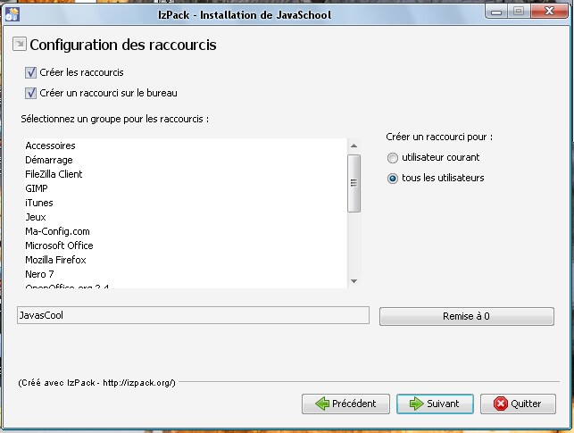
Sur le bureau vous aurez un raccourci pour l'application Java's Cool. Double cliquez dessus et Java's Cool se lance !
Désinstallation
Pour windows, cliquez sur démarrer, Tous les programmes allez dans javasCool et cliquez sur uninstaller.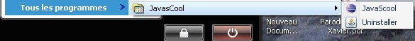
Cochez la case "Forcer la suppresssion ..." puis "Désinstaller". La barre de progression vous signifiera quand ce sera fini. Puis cliquez sur quitter.
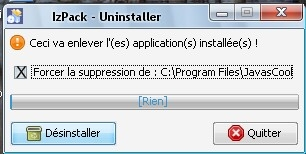